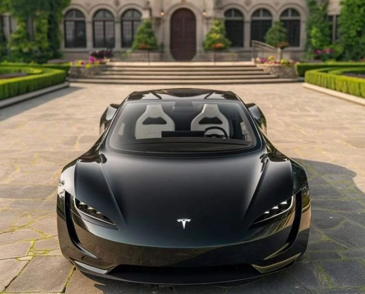
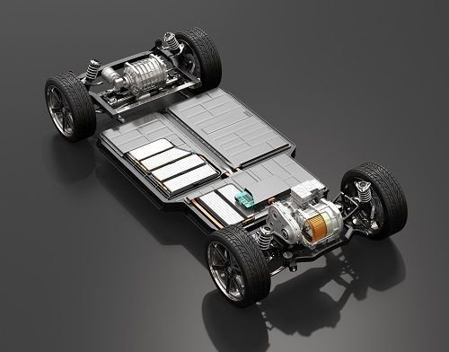
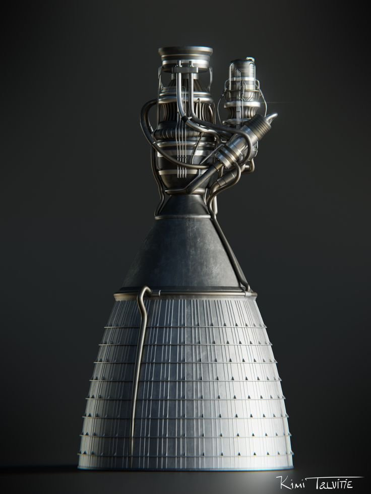
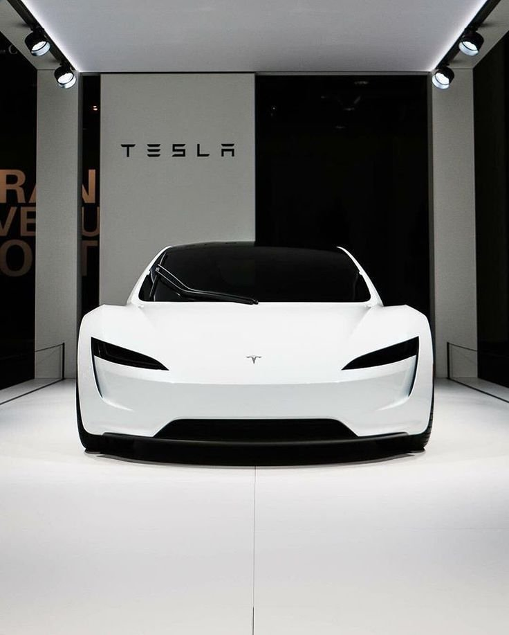

La voiture la plus rapide jamais montrée par Tesla : ce qui la propulse, comment elle marche, et qui l'a créée.
Appuie sur → ou Espace pour commencer · F pour le plein écran
Lors de sa présentation, la nouvelle Roadster est passée de 0 à 97 km/h (60 mph) en 0,81 seconde. Aucune voiture n'a jamais été testée officiellement aussi vite.
Barre plus courte = plus rapide. Le 0,81 s vient du chrono de Tesla, pas encore vérifié par un test indépendant.
Tesla, l'entreprise américaine de voitures électriques, fabrique la Roadster. Son équipe de design, dirigée par Franz von Holzhausen, a dessiné son look. SpaceX, l'entreprise de fusées d'Elon Musk, a construit les propulseurs. La voiture a même été présentée sur un site d'essai de SpaceX au Texas.
La première Roadster est mise en vente : la toute première voiture de Tesla, construite sur un châssis de Lotus Elise. Vendue jusqu'en 2012.
Un nouveau prototype est montré. Elon promet 0 à 97 km/h en 1,9 s et une sortie en 2020.
La sortie est repoussée encore et encore, presque chaque année.
La version finale est dévoilée près de Waco, au Texas. Elle roule à l'envers et saute par-dessus cinq Tesla.
Tesla annonce le début de la production. On peut déjà en réserver une.
Une voiture à essence brûle du carburant dans un moteur. La Roadster ne brûle rien. Elle a deux moteurs électriques, tous les deux sur les roues arrière. Ensemble, ils donnent :
Soit plus d'un mégawatt, la puissance d'environ dix voitures familiales. L'électricité est stockée dans une grande batterie plate sous le plancher, comme un skateboard. Cette batterie lourde placée en bas rend la voiture très stable.

Batterie Moteur électriqueExemple de plateforme de voiture électrique, pas les pièces exactes de la Roadster.
Tu appuies sur la pédale et l'électricité fait un petit voyage. Pas de vitesses à passer, pas de moteur à faire monter en régime : la voiture a toute sa puissance dès la première seconde.

Un vrai moteur de fusée (comme celui-ci) brûle du carburant et fait du feu. Les propulseurs de la Roadster, non : ils utilisent seulement de l'air.
Image de Kimi Talvitie, pour comparer.
On les appelle des propulseurs à gaz froid. Un réservoir très solide contient de l'air très comprimé. Quand une valve s'ouvre, l'air sort d'un coup vers l'arrière, et ça pousse la voiture vers l'avant.
C'est comme un ballon gonflé qui file dans la pièce quand tu le lâches. Le réservoir peut être rempli à nouveau entre deux départs.
Les propulseurs à l'arrière la font démarrer encore plus fort. Ceux placés tout autour permettent à la version la plus folle de sauter en l'air et de faire des saltos.
Pas de propulseurs. Des ailerons mobiles et un ventilateur d'aspiration sous la voiture la collent à la route. Réservation : 50 000 $.
Ajoute des propulseurs à gaz froid à l'arrière pour un départ comme une fusée. Série limitée. Réservation : 250 000 $.
10 propulseurs tout autour de la voiture. Elle peut sauter, faire des saltos et voler un instant au-dessus d'autres voitures.
Course montrée en temps réel, avec les temps annoncés par Tesla.
En 2017, Tesla promettait 1 000 km d'autonomie. La version 2026 annonce environ la moitié, mais elle est beaucoup plus rapide. Tous les chiffres sont ceux annoncés par Tesla.

Tesla annonce le début de la production en 2028. D'ici là, la Roadster reste la voiture la plus attendue d'internet : pas de moteur à essence, deux moteurs électriques, et un petit coup de main de SpaceX.
Infos issues de la présentation de Tesla du 15 octobre 2026, rapportées par TechCrunch, InsideEVs et Electrek.